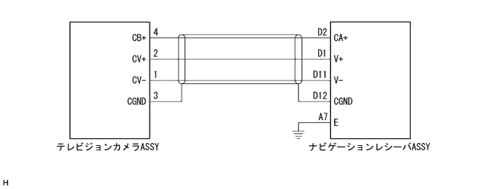
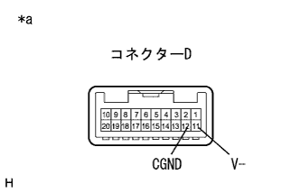
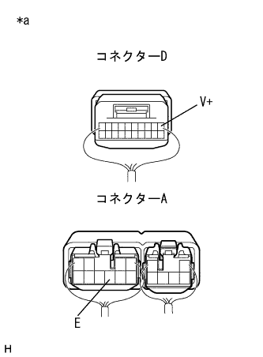

DTC C1622 Back Camera Not Connected |
| DTC No. | Diagnosis Description | Inspection Area |
|---|---|---|
| C1622 | Back Camera Signal Open Circuit |
|

))| Step 1 | Inspect Wire Harness and Connector (Navigation Receiver Assembly - Television Camera Assembly) |
Pre-inspection Preparation
Disconnect connector D of the navigation receiver assembly.
Disconnect the television camera assembly connector.
Resistance Inspection
Using SST (Toyota electrical tester), measure the resistance of the wire harness between the navigation receiver assembly and television camera assembly.
| Tester Connection (Terminal Symbol) | Condition | Standard |
|---|---|---|
| D2 (CA+) - Body ground | Always | 10 kΩ or higher |
| D12 (CGND) - Body ground | Always | 10 kΩ or higher |
| D1 (V+) - Body ground | Always | 10 kΩ or higher |
| D11 (V-) - Body ground | Always | 10 kΩ or higher |
| D2(CA+) - 4(CB+) | Always | Below 1 Ω |
| D12(CGND) - 3(CGND) | Always | Below 1 Ω |
| D1(V+) - 2(CV+) | Always | Below 1 Ω |
| D11(V-) - 1(CV-) | Always | Below 1 Ω |
|
| ||||
| OK | |
| Step 2 | Inspect Navigation Receiver Assembly (V-, CGND) |
Pre-inspection Preparation
 |
Disconnect connector D of the navigation receiver assembly.
Resistance Inspection
Using SST (Toyota electrical tester), measure the resistance between each terminal of the connector and body ground.
| Tester Connection (Terminal Symbol) | Condition | Standard |
|---|---|---|
| D11 (V-) - Body ground | Always | Below 1 Ω |
| D12 (CGND) - Body ground | Always | Below 1 Ω |
| *a | Connector disconnected (Navigation receiver assembly) |
|
| ||||
| OK | |
| Step 3 | Inspect Wire Harness and Connector (Television Camera Assembly Power Source) |
Pre-inspection Preparation
Disconnect the television camera assembly connector.
Voltage Inspection
Using SST (Toyota electrical tester), with the navigation receiver assembly connector D connected, measure the voltage between each terminal of the television camera assembly vehicle side wire harness connector.
| Tester Connection (Terminal Symbol) | Condition | Standard |
|---|---|---|
| 4(CB+) - 3(CGND) | IG ON, shift lever in R | 5.7 to 6.5 V |
|
| ||||
| OK | |
| Step 4 | Inspect Navigation Receiver Assembly (V+, E) |
 |
Waveform Inspection
| *a | Connector connected (Navigation receiver assembly) |
 |
Using SST (TaSCAN), with the navigation receiver assembly and television camera assembly connectors connected, measure the waveform between connectors A and D of the navigation receiver assembly vehicle side wire harness.
| Item | Description |
|---|---|
| Terminal No. (Terminal Symbol) | D1(V+) - A7(E) |
| Tool Setting | 200 mV/DIV、50 μS/DIV |
| Measurement Condition |
|
| *a | Waveform A |
| *b | Waveform B |
| *c | Synchronizing signal |
| *d | Image waveform |
|
| ||||
| OK | ||
| ||